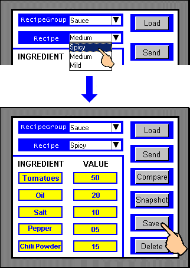
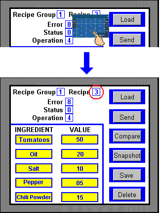
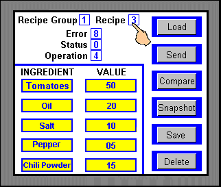
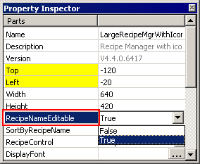
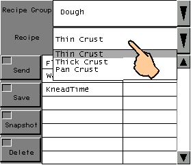
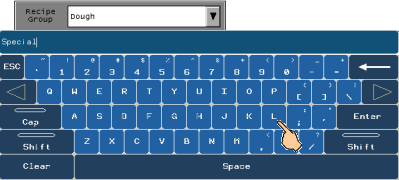

|
|
|
|
|
|
|
|
At run time, you can save or delete the current recipe which is selected or displayed.
Performing a Save operation in run time saves the recipe ingredient values to the recipe group file. To save the values of the current recipe at run time, two types of Save operations are possible:
Save to Current Recipe saves the current values to the selected recipe.
Save as New Recipe saves the current values as a new recipe.
When you are in maintenance mode and you save a recipe to file, an error message will display. For more information on maintenance mode, see Section 20.5.4, Performing Maintenance on the Panel.
When viewing recipes in Web Gate, the recipe Save operation saves the values from the Web Gate client to the target server. For more information on using recipes with Web Gate, see Section 17.6.8, Sharing Recipes Using Web Gate.
|
Server Target |
Save recipe |
Web Gate Client |
|
|
|
To save currently displayed recipe values, do one of the following:
Press the Save button to update the currently selected recipe.

Select a different recipe, then press Save.

The selected recipe will be saved with the displayed recipe values.
To save currently displayed recipe values as a new recipe, you will need to select the recipe number with a numeric display, Value animation, or script. For information on how to set up your panel with these features, see Section 17.4, Drawing the Recipe Panel.
With the values that you want to save displayed, select the Recipe number part.
Select a new recipe number. The values will remain the same.

Perform the Save operation to save the displayed values as a new recipe and recipe number.
After saving a recipe on the target machine, you can then upload the saved recipe data to the editor. For more information about uploading recipes, see Section 17.7, Uploading Recipe Group Data from the Target Machine.

You cannot use the Save button in a Recipe Manager part for the Save As operation. Use either the Save button in the Toolchest Recipe folder or use the Operation element in the Recipe Control variable. See Section 17.3.5.1, Recipe Control and Parison Control Variables.
The above illustrates how to save as using recipe control variables. You can also use the Create New button to save the selected recipe with a default recipe name. After touching the Create New button, select the newly created recipe to change the recipe name and change recipe values.
Use the Delete operation to delete a recipe's values from the recipe file.
Select a recipe that you want to delete.

Perform the Delete operation.
The recipe will be deleted from the recipe file, but the values will continue to display until you perform another operation.
You can rename recipes at runtime by using a Recipe Manager or List part.
Before download, in the Recipe Manager or List part properties, set RecipeNameEditable to True.

At run time, select the recipe you want to rename.

Touch the Recipe field to bring up the keypad and enter the name of the new recipe.

Touch the Save button to save the new recipe name.